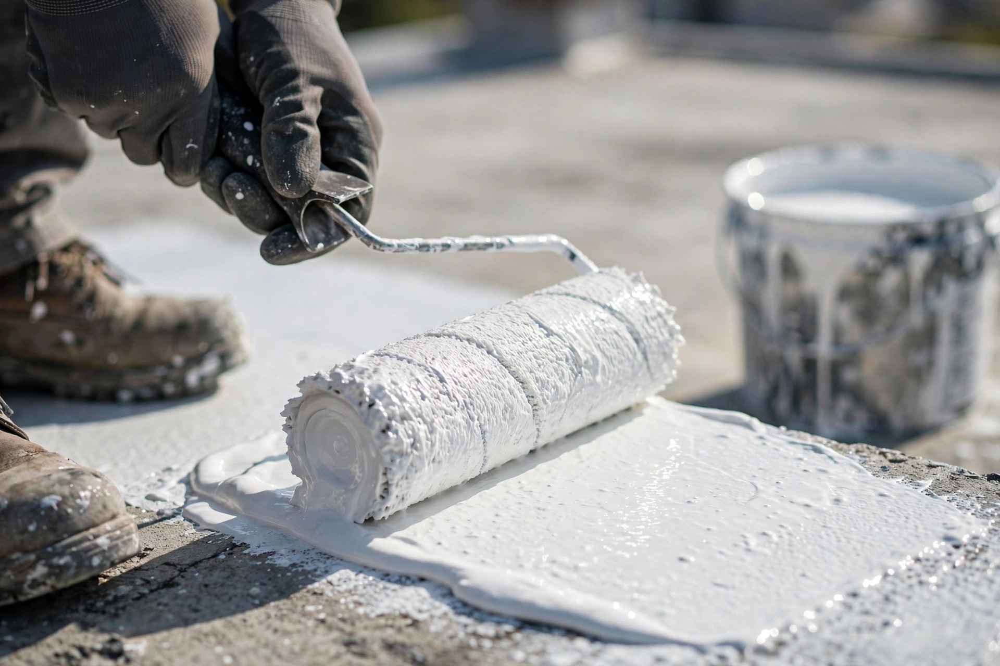
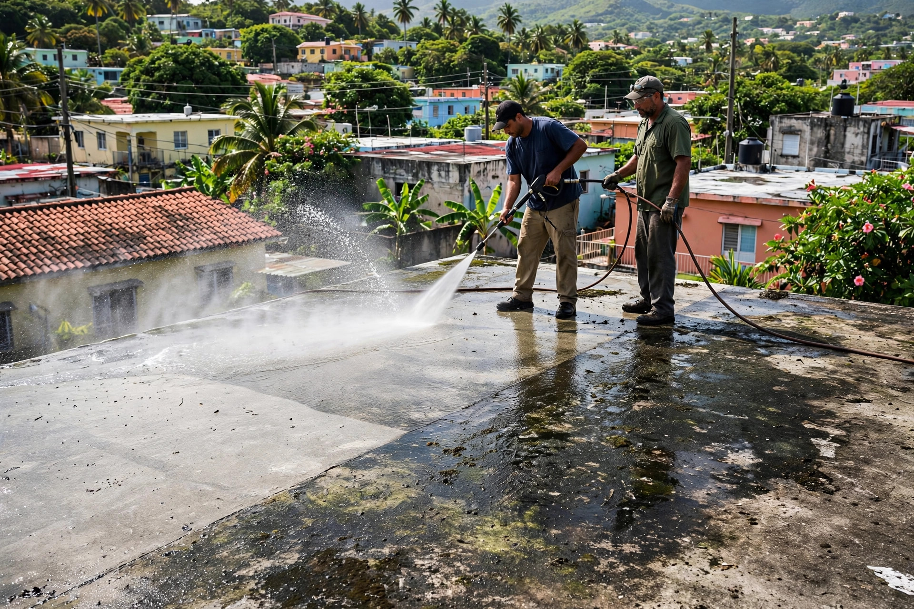
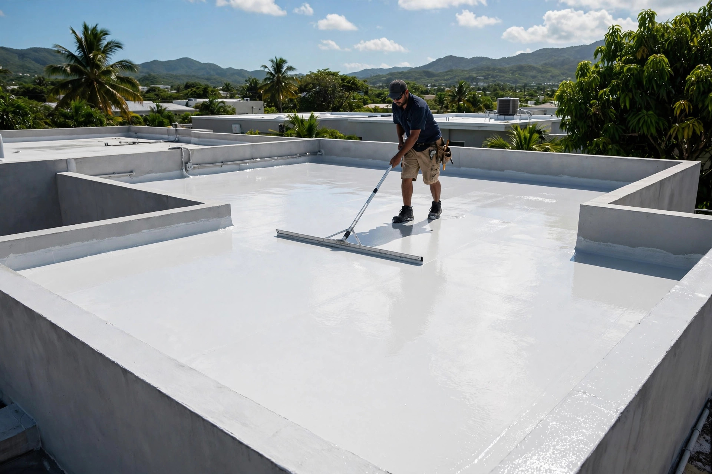

Servicio a toda la isla
Profesionalismo, integridad y garantía en cada techo. Sellado residencial y comercial en toda la isla de Puerto Rico.
Trabajos reales
Cada foto es un trabajo real de sellado de techos. Desliza la cinta y toca cualquier foto para verla grande.





← desliza para ver los trabajos →
Lo que hacemos
Servicios de Rafael Roofing Inc. en Servicio a toda la isla. Cotiza por WhatsApp: sin compromiso.
Protección completa contra filtraciones para tu hogar, con acabado profesional.
ResidencialSistemas de sellado para negocios e instalaciones comerciales en toda la isla.
ComercialLocalizamos el origen de cada filtración y lo corregimos antes de sellar.
ReparaciónPreparación de superficie y tratamiento para una protección duradera.
SelladoAsí de fácil
Visitamos tu propiedad, medimos el techo y detectamos filtraciones sin costo.
Te damos precio fijo y alcance claro del trabajo antes de empezar.
Limpieza a presión, reparación de grietas y preparación de superficie.
Aplicación del sistema de sellado con garantía escrita.
Quiénes somos
Rafael Roofing Inc. sella techos residenciales y comerciales en toda la isla. Nuestra forma de trabajar: profesionalismo, integridad y garantía en cada techo.
Del estimado al techo sellado: inspección gratis, estimado por escrito, preparación y sellado profesional.
Preguntas frecuentes
Inspección del techo, limpieza de la superficie, reparación de grietas y puntos débiles, y la aplicación del sistema de sellado.
Sí. Rafael Roofing Inc. ofrece servicio a toda la isla. Escríbenos por WhatsApp y coordinamos tu visita.
Por WhatsApp o llamando al 787-832-8969 o al 787-433-5056. Cuéntanos qué necesita tu techo y te orientamos.
Primero localizamos el origen de cada filtración, lo reparamos y luego aplicamos el sellado completo para proteger el techo.
Es nuestra forma de trabajar: trato serio, precio claro por escrito y respaldo del trabajo realizado.
Cotiza tu techo
Teléfono / WhatsApp
787-832-8969Cobertura
Servicio a toda la isla
Llena esto y te abrimos WhatsApp con tu mensaje listo.
Cotización gratis: dinos tu pueblo y qué le pasa a tu techo. Te orientamos sin compromiso.
Esta página la creó ManuPro. Escríbenos hoy mismo y cotiza la website profesional de tu negocio.
Cotizar por WhatsApp